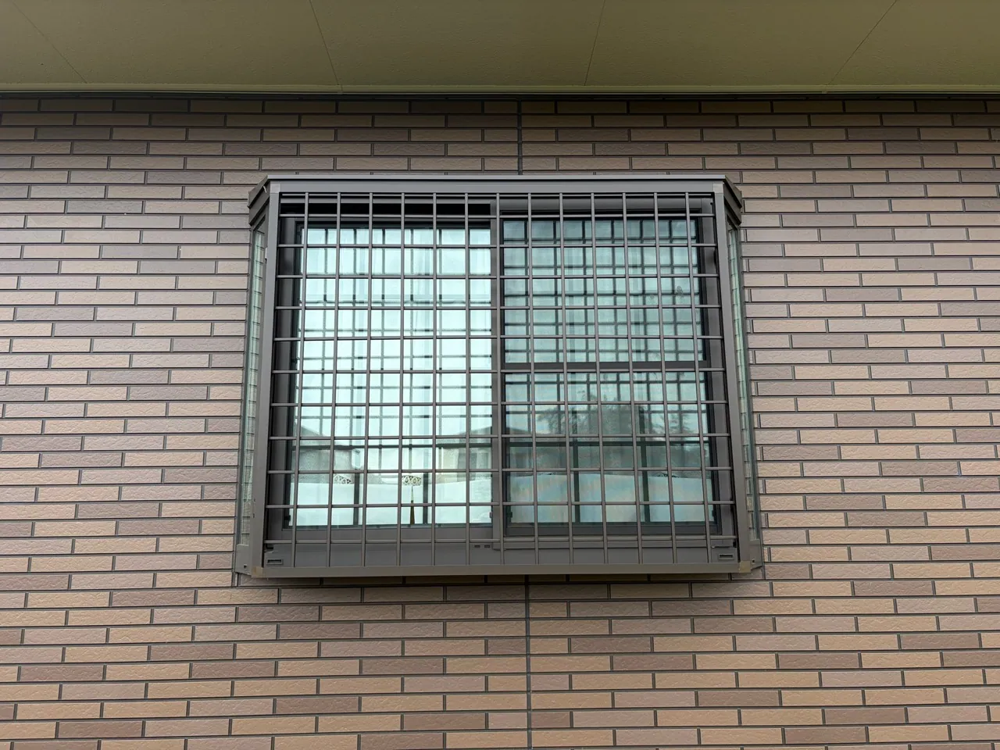
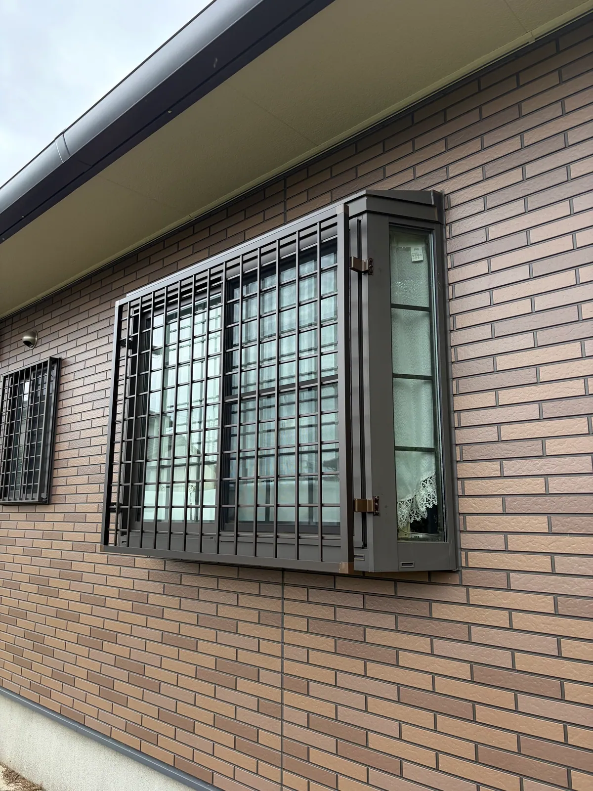
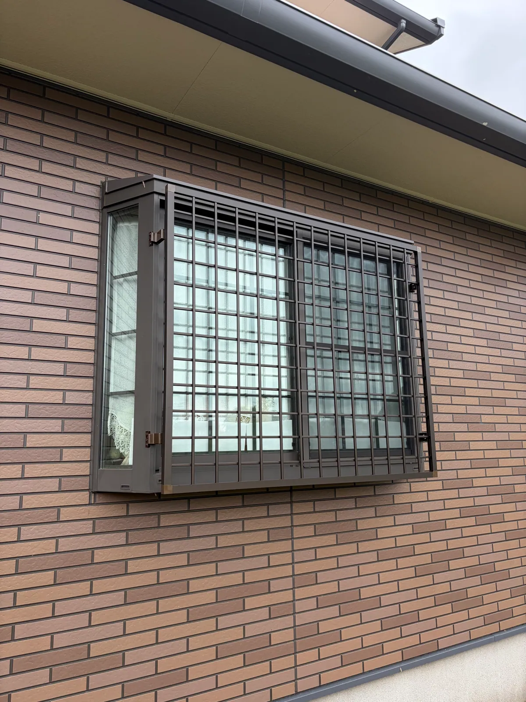

定期点検でのご相談から、窓に面格子を取り付けました
桶川市川田谷 ／ 2026年9月施工 ／ 作業1日

塗り替えをさせていただいたお宅に定期点検で伺ったとき、「窓の防犯が気になる」とご相談をいただきました。窓の外側に面格子を取り付けています。工事費は製品代を含めて約9.5万円（税込）、作業は1日で終わりました。
面格子は、窓の外側に取り付ける格子です。窓の外をふさぐので、外から窓に手が届きにくくなります。窓の大きさを測り、合う製品を選んで取り付けました。
| 所在地 | 埼玉県桶川市川田谷 |
|---|---|
| 工事内容 | 面格子の取付け |
| 工事費 | 約9.5万円（税込・製品代込み） 窓の大きさと、取り付ける面格子の種類で変わります。 |
| 作業日数 | 1日 |
| 施工時期 | 2026年9月 |


Real Makeでは、塗り替えをしたお宅に定期点検で伺っています。今回のように、点検のときに外壁以外のご相談をいただくことも少なくありません。工事のあとも、同じ市内から気軽に声をかけていただける関係を大切にしています。
「この窓に付けられるか」「どんな面格子があるか」は、窓の写真をLINEで送っていただければお答えします。写真がなくても、お電話で状況をうかがえます。